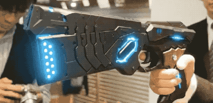

Number 1
Psycho Pass

Information/Recommendation
This anime is a cyberpunk mystery that will leave you on the edge of your seat. This anime asks the question, "Can there be perfect order with only an algorthim in control that has no human emotions or are humans still needed to keep order?" This anime will make you think and will tug at your heart along the way.
Facts
There is a replica of the weapon used in the anime, it is amazing but do not just take my word for it:
